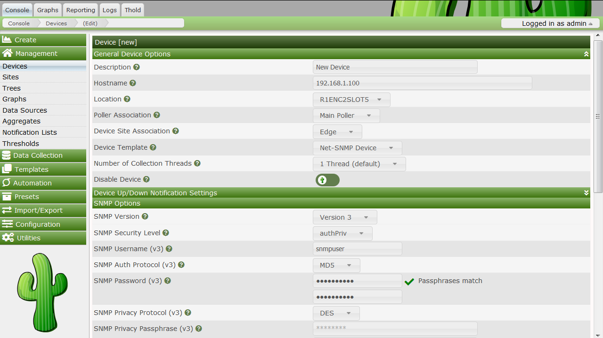
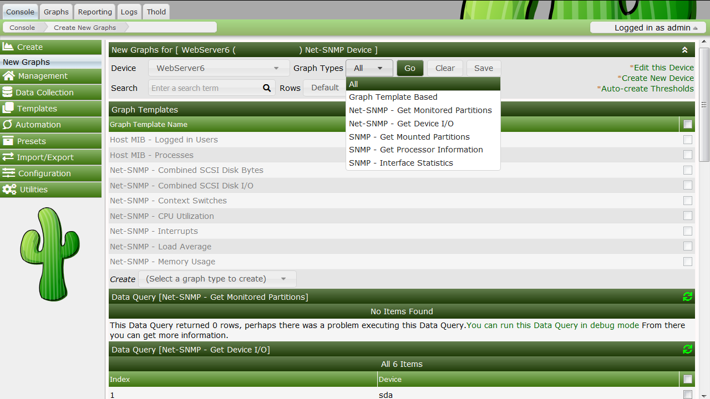

At this point, you probably realize that graphing is Cacti's greatest strength. Cacti has many powerful features that provide complex graphing and data acquisition, some which have a slight learning curve. Do not let that stop you however, because graphing your network is incredibly simple.
The next two sections will outline the two basic steps which are typically required to create Graphs for most Devices or Device Types.
NOTE: The process described below is the Classic way for you to create and manage Devices and Graphs. However, Cacti now allows your to Automate many of these tasks in the Automation section of the Console. That topic is covered in the Automation Chapter.
The first step to creating Graphs for your network is adding a Device for each network device that you want to create Graphs for. A Device contains important details such as the network hostname, SNMP parameters, and Device Type (aka Device Template).
To manage Devices within Cacti, click on the Devices menu item. Clicking Add will bring up a new device form. The first two fields, Description and Hostname are the only two fields that require your input beyond the defaults. If your host type is defined under the host template dropdown, be sure to select it here. You can always choose "Generic SNMP-enabled Host" if you are just graphing traffic or "None" if you are unsure. It is important to remember that the host template you choose will not lock you into any particular configuration, it will just provide more intelligent defaults for that type of host.

Description - This description will show up in the first column of the device list. You may refer to it e.g. in graph titles.
Hostname - Either an IP address or a hostname. The hostname will be resolved using the standard host resolving mechanisms, e.g. Dynamic Name Services (DNS)
Host Template - A Host Template is a container for a list of graph templates that will be related to this host.
Notes - Notes for a given device.
Disable Host - Exclude this host from being polled. This is of particular value, if a device is no longer available, but should be kept e.g. as a reference.
Downed Device Detection
Ping Method - Available only for PING and SNMP or PING
Ping Port - Available only for UDP/TCP PING test types. Please define the port to be tested here. Make sure, that no firewall intercepts the test ping.
Timeout Value - After this time, the test fails. Measured in units of milliseconds.
Ping Retry Count - The number of times Cacti will attempt to ping a host before failing.
SNMP Version
SNMP Community - SNMP read community for this device
SNMP Port - UDP port number to use for SNMP (default is 161).
SNMP Timeout - Maximum number of milliseconds Cacti will wait for an SNMP response (does not work with php-snmp support).
Maximum OID's Per Get Request - This is a performance feature. Specifies the number of OID's that can be obtained in a single SNMP Get request. WARNING: This feature only works when using Spine. WARNING Some devices do not support values greater than 1 and/or may reports as unknown data if this value is too high.
SNMP Username - username of an SNMP V3 createUser statement or equivalent
SNMP Password - authpassphrase of an SNMP V3 createUser statement or equivalent
SNMP Auth Protocol - Authentication type of an SNMP V3 createUser statement or equivalent. Select either MD5, SHA, SHA-224, SHA-256, SHA-392, or SHA-512. Defaults to MD5.
SNMP Privacy Passphrase - The privacy passphrase of an SNMP V3 createUser statement or equivalent.
SNMP Privacy Protocol - The privacy protocol of an SNMP V3 createUser statement or equivalent. Select DES (if available), AES-128, AES-192, or AES-256. Defaults to DES.
NOTE Spine may not support DES today as some Net-SNMP distributions have disabled it.
SNMP Context - When using the View-Based Access Control Model (VACM), it is possible to specify an SNMP Context when mapping a community name to a security name with a com2sec directive, with the group directive and the access directive. This allows for defining special access models. If using such a parameter with your target's SNMP configuration, specify the context name to be used to access that target here.
After saving your new device, you should be redirected back to the same edit form with some additional information. If you configured SNMP for this host by providing a valid community string, you should see various statistics listed at the top of the page. If you see "SNMP error" instead, this indicates an SNMP problem between Cacti and your device.
Towards the bottom of the page there will be two addition boxes, Associated Data Queries, and Associated Graph Templates. If you selected a host template on the previous page, there will probably be a few items in each box. If there is nothing listed in either box, you will need to associate at least one data query or graph template with your new device or you will not be able to create graphs in the next step. If no available graph template or data query applies to your device, you can check the Cacti templates repository or create your own if nothing currently exists.
The SNMP version that you choose can have a great effect on how SNMP works for you in Cacti. Version 1 should be used for everything unless you have reason to choose otherwise. If you plan on utilizing (and your device supports) high-speed (64-bit) counters, you must select version 2. Starting with Cacti 0.8.7, version 3 is fully implemented.
The way in which Cacti retrieves SNMP information from a host has an effect on which SNMP-related options are supported. Currently there are three types of SNMP retrieval methods in Cacti and are outlined below.
| Type | Description | Supported Options | Where Used |
|---|---|---|---|
| External SNMP | Calls the net-snmp snmpwalk and snmpget binaries that are installed on your system. | All SNMP options | Web interface and PHP poller |
| Internal SNMP | Uses PHP's SNMP functions which are linked against net-snmp at compile time. |
Version 1 Only | Web interface and PHP poller |
| Spine SNMP | Links directly against net-snmp and directly uses the SNMP APIs. |
All SNMP options | Spine Poller |
SNMP supports authentication and encryption features when using SNMP protocol version 3 known as View-Based Access Control Model (VACM). This requires, that the target device in question supports and is configured for SNMP V3 use. In general, configuration of V3 options is target type dependent. The following is cited from man snmpd.conf concerning user definitions
SNMPv3 Users
createUser [-e ENGINEID] username (MD5|SHA) authpassphrase [DES|AES] [privpassphrase]
MD5 and SHA are the authentication types to use. DES and AES are the privacy
protocols to use. If the privacy passphrase is not specified, it is assumed
to be the same as the authentication passphrase. Note that the users created will
be useless unless they are also added to the VACM access control tables
described above.
SHA authentication and DES/AES privacy require OpenSSL to be installed and the
agent to be built with OpenSSL support. MD5 authentication may be used without
OpenSSL.
Warning: the minimum pass phrase length is 8 characters.VACM directives are explained from man snmpd.conf as follows
VACM Configuration
The full flexibility of the VACM is available using four configuration directives -
com2sec, group, view and access. These provide direct configuration of the underlying
VACM tables.
com2sec [-Cn CONTEXT] SECNAME SOURCE COMMUNITY
map an SNMPv1 or SNMPv2c community string to a security name - either from a
particular range of source addresses, or globally ("default"). A restricted
source can either be a specific hostname (or address), or a subnet -
represented as IP/MASK (e.g. 10.10.10.0/255.255.255.0), or IP/BITS
(e.g. 10.10.10.0/24), or the IPv6 equivalents.
The same community string can be specified in several separate directives
(presumably with different source tokens), and the first source/community
combination that matches the incoming request will be selected. Various
source/community combinations can also map to the same security name.
If a CONTEXT is specified (using -Cn), the community string will be mapped
to a security name in the named SNMPv3 context. Otherwise the default
context ("") will be used.
group GROUP {v1|v2c|usm} SECNAME
maps a security name (in the specified security model) into a named group.
Several group directives can specify the same group name, allowing a single
access setting to apply to several users and/or community strings.
Note that groups must be set up for the two community-based models separately -
a single com2sec (or equivalent) directive will typically be accompanied by two
group directives.
view VNAME TYPE OID [MASK]
defines a named "view" - a subset of the overall OID tree. This is most commonly
a single subtree, but several view directives can be given with the same view
name, to build up a more complex collection of OIDs. TYPE is either included
or excluded, which can again define a more complex view (e.g by excluding certain
sensitive objects from an otherwise accessible subtree).
MASK is a list of hex octets (separated by . or :)
with the set bits indicating which subidentifiers in the view OID to match against.
This can be used to define a view covering a particular row (or rows) in a table.
If not specified, this defaults to matching the OID exactly (all bits set), thus
defining a simple OID subtree.
access GROUP CONTEXT {any|v1|v2c|usm} LEVEL PREFX READ WRITE NOTIFY
maps from a group of users/communities (with a particular security model
and minimum security level, and in a specific context) to one of three views,
depending on the request being processed.
LEVEL is one of noauth, auth, or priv. PREFX specifies how CONTEXT should be
matched against the context of the incoming request, either exact or prefix.
READ, WRITE and NOTIFY specifies the view to be used for GET*, SET and
TRAP/INFORM requests (although the NOTIFY view is not currently used). For
v1 or v2c access, LEVEL will need to be noauth.As an example, following definitions in the snmpd configuration create a set of definitions for use with SNMP V3
# sample configuration for SNMP V3
# create an SNMP V3 user with an authpassphrase and a privacy passphrase
## username authProto authpassphrase privProto privpassphrase
## -------- --------- -------------- --------- --------------
createUser gandalf MD5 myauthpass DES myprivpass
# Second, map the security name into a group name:
## groupName securityModel securityName
## --------- ------------- ------------
group groupv3 usm gandalf
# Third, create a view for us to let the group have rights to:
## incl/excl subtree mask
## --------- ------- ----
view all included .iso 80
# Fourth, create the access for that group without context
## context sec.model sec.level prefix read write notif
## ------- --------- --------- ------ ---- ----- -----
access groupv3 "" any auth exact all all allWhen adding this stuff to your snmp configuration, please remember to restart the agent. Verify this setting using
shell>snmpwalk -v 3 -a MD5 -A myauthpass -x DES -X myprivpass -u gandalf -l authpriv localhost interface
IF-MIB::ifNumber.0 = INTEGER: 3
IF-MIB::ifIndex.1 = INTEGER: 1
IF-MIB::ifIndex.2 = INTEGER: 2
IF-MIB::ifIndex.3 = INTEGER: 3
IF-MIB::ifDescr.1 = STRING: lo
IF-MIB::ifDescr.2 = STRING: irda0
IF-MIB::ifDescr.3 = STRING: eth0
IF-MIB::ifType.1 = INTEGER: softwareLoopback(24)
IF-MIB::ifType.2 = INTEGER: other(1)
IF-MIB::ifType.3 = INTEGER: ethernetCsmacd(6)
...Now that you have created some devices, it is time to create graphs for these devices. To do this, select the New Graphs menu option under the Create heading. If you're still at the device edit screen, select Create Graphs for this Host to see a screen similar to the image pictured below.

The dropdown menu that contains each device should be used to select the host that you want to create new graphs for. The basic concept to this page is simple, place a check in each row that you want to create a graph for and click Create.
If you are creating graphs from inside a "Data Query" box, there are a few additional things to keep in mind. First is that you may encounter the situation as pictured above with the "SNMP - Interface Statistics" data query. If this occurs you may want to consult the section on debugging data queries to see why your data query is not returning any results. Also, you may see a "Select a graph type" dropdown box under some data query boxes. Changing the value of this dropdown box affects which type of graph Cacti will make after clicking the Create button. Cacti only displays this dropdown box when there is more than one type to choose from, so it may not be displayed in all cases.
Once you have selected the graphs that you want to create, simply click the Create button at the bottom of the page. You will be taken to a new page that allows you to specify additional information about the graphs you are about to create. You only see the fields here that are not part of each template, otherwise the value automatically comes from the template. When all of the values on this page look correct, click the Create button one last time to actually create your graphs.
If you would like to edit or delete your graphs after they have been created, use the Graph Management item on the menu. Likewise, the Data Source menu item allows you to manage your data sources in Cacti.
Copyright (c) 2004-2024 The Cacti Group